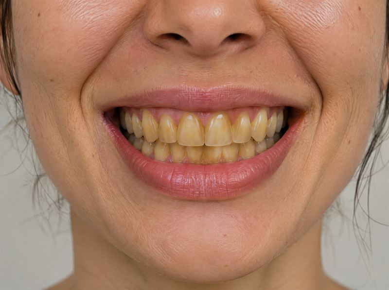
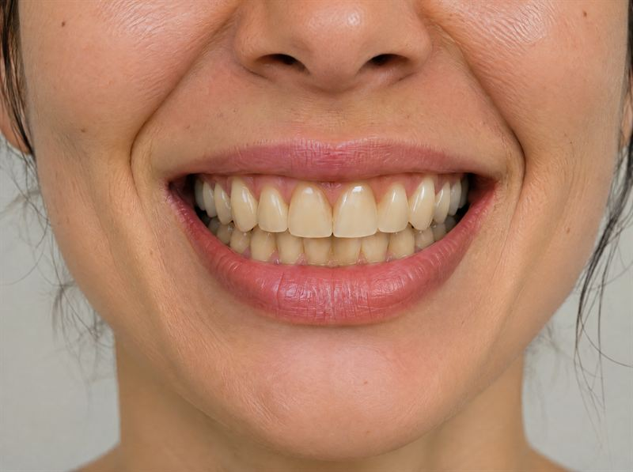
Teeth whitening
Naturally stained teeth brightened to a lighter, natural-looking shade.
Individual results vary.
Every smile is different. Explore before-and-after examples of the treatments we offer, and drag the line to compare each smile.
Drag the line, or use the arrow keys, to compare before and after.


Naturally stained teeth brightened to a lighter, natural-looking shade.
Individual results vary.
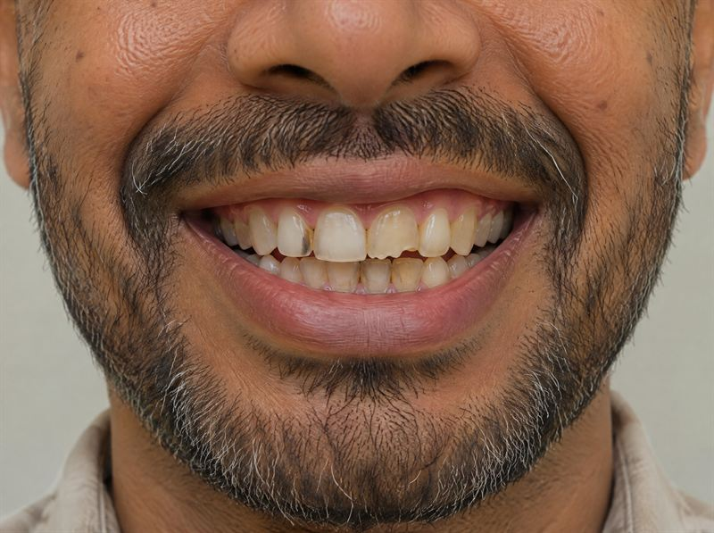
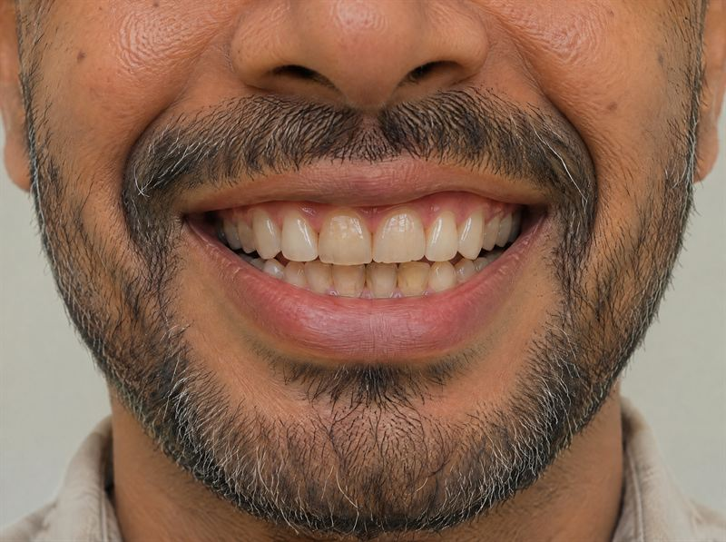
Uneven, chipped upper front teeth given a more uniform appearance.
Individual results vary.
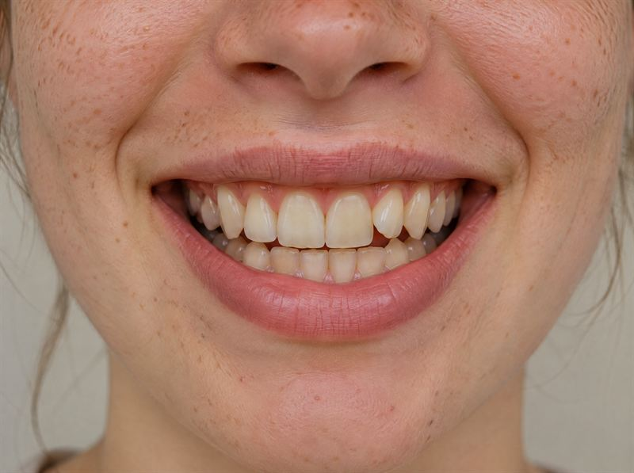
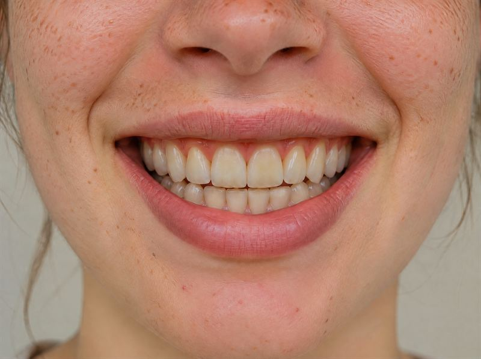
Mildly crowded front teeth brought into straighter alignment.
Individual results vary.
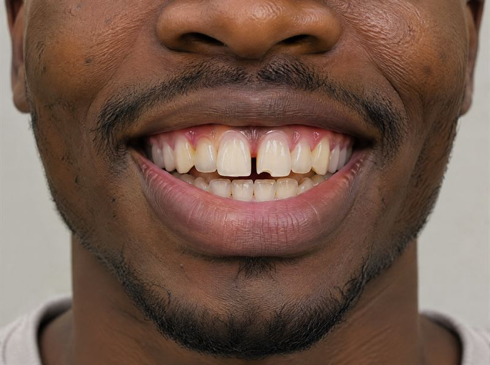
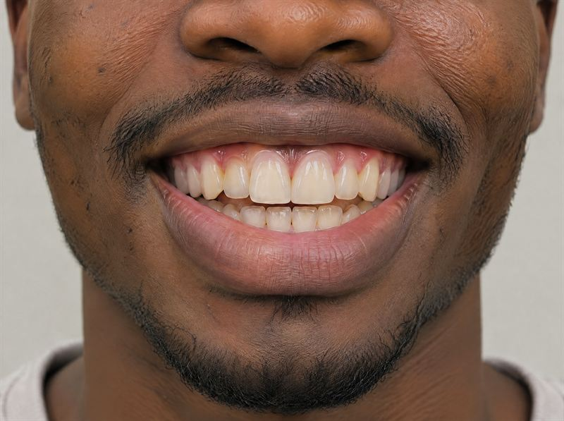
A small gap and chipped edge restored with tooth-coloured bonding.
Individual results vary.
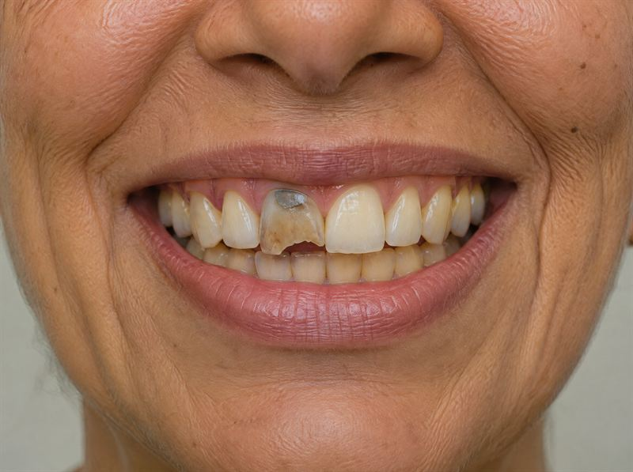
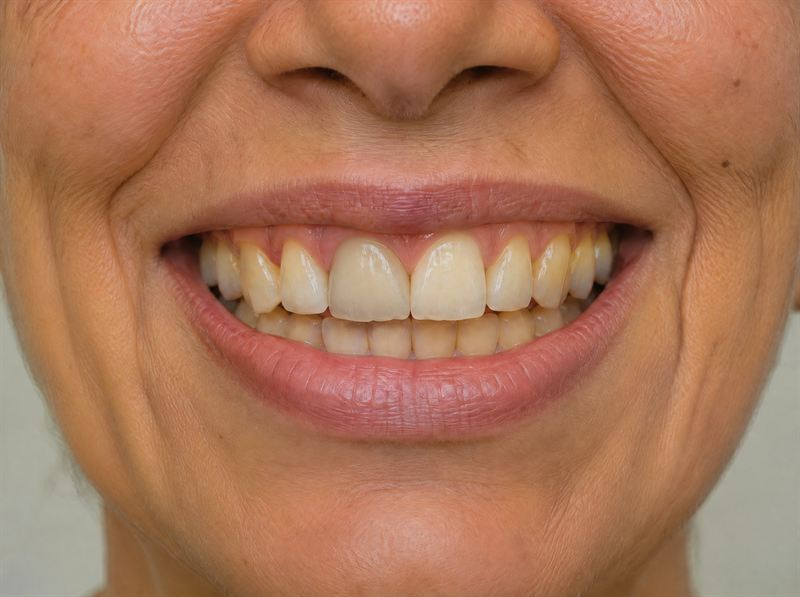
A visibly damaged front tooth restored to match its neighbours.
Individual results vary.
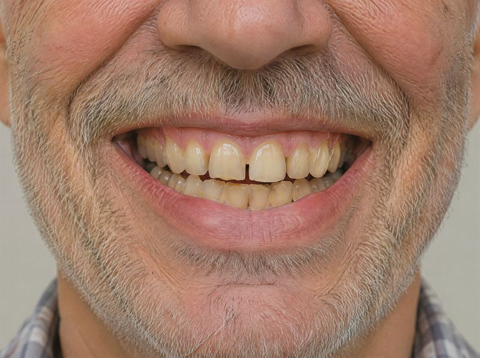
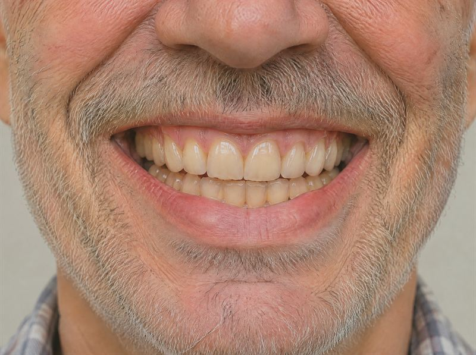
Several mild cosmetic concerns addressed for a more harmonious smile.
Individual results vary.
No cases in this category yet.
Every plan starts with a conversation. We'll listen, examine and explain your options, with no obligation.